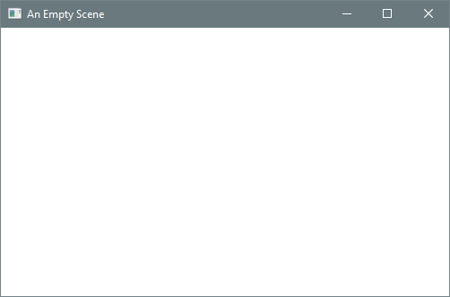
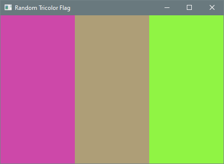
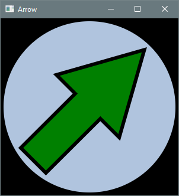

3.7 Graphics
Key terms: widget, stage, scene, node, children, scene graph, named constant
A graphics program performs such operations as drawing geometric shapes in an output window, filling them with colors and textures, adding visual effects like shadows, and applying geometric transformations like reflections and rotations. Although graphics programming is not essential for learning object-based programming, it provides a visually engaging setting in which to practice creating and using objects.
3.7.1 Widget Toolkits
A graphical user interface (GUI, pronounced gooey) enables users to interact with an application by manipulating widgets — interactive visual elements like buttons, sliders, and menus. Java’s Abstract Window Toolkit (AWT) is a collection of library classes included in the original release of Java for graphics programming and GUI construction. AWT components are thin wrappers around native widgets, so their appearance and behavior depend on the host system.
AWT has largely been superseded by Swing. Swing components are implemented as Java classes, so their rendering is performed by Java methods — that is, by the JVM. As a result, Swing components look and behave consistently across desktop platforms.
3.7.2 JavaFX
JavaFX is the newest widget toolkit, designed for building user interfaces with richer graphics and with a layout system better suited to a wide range of screen sizes. It provides a framework for developing applications whose appearance and behavior remain consistent across device types.
Although Oracle continues to support Swing, it is no longer under active development, and JavaFX will eventually replace it. JavaFX was first released in 2008 as an extension library and integrated into the JDK in 2014. In 2018, Oracle decoupled JavaFX from the JDK so that it can evolve independently as an open-source project maintained by OpenJFX (https://openjfx.io/).
JavaFX applications are organized around the metaphor of a theater. Operations take place on a
stage modeled by the Stage class, corresponding to a top-level window. The elements to be
displayed on stage comprise a scene, encapsulated by a Scene object. Each element within a
scene is called a node. Nodes can be shapes, images, text, video, widgets, or containers of
other nodes. The contents of a container are referred to as its children. The nodes in a scene form
a hierarchical structure called a scene graph.
3.7.3 Empty Scene
A JavaFX program is defined by a class that extends Application, a JavaFX library class. The
keyword extends is used to define a new class through inheritance from an existing one.
Inheritance is one of the cornerstones of object-oriented programming, but the details are beyond
the scope of this book. For present purposes, it suffices to know that a class extending
Application must provide a start method, which typically creates and displays a scene.
The class also defines a main method that calls launch (inherited from Application); it can be
omitted from most JavaFX applications, but there are technical situations — such as running in
certain IDEs, performing pre-launch setup, or targeting older Java versions — where it is necessary.
Listing 3.7.3 does nothing more than display an empty scene, but it illustrates the high-level structure of every JavaFX application.
Listing 3.7.3 - EmptyScene.java
Output 3.7.3

The start method is prefaced with the @Override annotation. Annotations are not discussed or
used elsewhere in this book, with the single exception of @Override, which indicates that a method
is inherited. While not required for functionality, @Override can help prevent subtle bugs and
also serves as a form of documentation.
An instance of the Pane class is created at the beginning of start to serve as the root node of
the scene. Several constructors are provided by the Scene class; the one used here takes a
reference to the root node along with the width and height of the scene in pixels. The scene in this
program is empty — no elements have been added. The final three lines of the start method specify
a stage title, attach the scene to the stage, and make the stage visible.
3.7.4 Rectangles and Colors
Shapes in a graphics application may appear continuous, but this is an illusion: each shape is
ultimately rendered on a discrete grid of pixels. Shape objects store their coordinates and
dimensions as double values to ensure precision in geometric calculations and transformations
(such as rotations). Client programs typically use double for variables representing coordinates
and dimensions to remain consistent with the API.
Listing 3.7.4 displays a flag composed of three vertical stripes, each rendered as a Rectangle. A
rectangle is created by specifying the coordinates of its upper-left corner along with its width and
height. In the default JavaFX coordinate system, the origin (0, 0) is located in the upper-left
corner of the scene, with x increasing to the right and y increasing downward.
Each rectangle is added to the scene graph by calling getChildren() on the root node and inserting
the rectangle into the returned list.
Listing 3.7.4 - RandomTricolorFlag.java
Output 3.7.4

Colors in JavaFX are represented by instances of the Color class. The program uses the RGB color
model, in which a color is defined by the intensities of red, green, and blue. Figure 3.7.4a shows
the colors obtained when each primary component is either absent (0) or at full intensity (1), and
Figure 3.7.4b shows the RGB values for several other familiar colors.
Figure3.7.4a: Binary RGB Values
{kind=link}
Figure3.7.4b: Common RGB Values
{kind=link}
The static factory method Color.color creates a color from three double values in the range
[0, 1), corresponding to the intensities of red, green, and blue. By selecting random values for the
outer stripes and interpolating between them for the middle stripe, the program produces a visually
coherent tricolor flag.
Several variables in the program are declared with the final keyword. A final variable, also
called a named constant, is initialized once and cannot be reassigned. Using final for fixed
values is considered good practice. It improves readability, reduces the likelihood of errors when a
value is used in multiple places, and helps ensure that a variable is not repurposed in a way that
conflicts with its intended role. In principle, every variable that is not modified after
initialization could be declared final, but in some cases this may introduce a degree of visual
clutter. A practical compromise is to declare primitive values final when possible, and object
references only when emphasizing that the reference should not be reassigned.
Note that many JavaFX classes have counterparts in the java.awt package. When working with JavaFX,
care must be taken to import the correct classes. For example, colors in this program must be
represented by javafx.scene.paint.Color, not java.awt.Color.
3.7.5 Circles and Polygons
Listing 3.7.5 displays an arrow centered within a circle. The arrow is composed of a rectangle and a
triangle. JavaFX does not provide a dedicated triangle class, but the more general Polygon class
can represent any closed shape with straight-line sides. Its constructor takes a sequence of x-y
coordinates specifying the corners in the order they are connected; the last corner is automatically
joined to the first to close the polygon.
Listing 3.7.5 - Arrow.java
Output 3.7.5

All coordinates and dimensions are expressed relative to the size of the scene, ensuring that the figure scales correctly if the scene size is changed. The apex of the triangle forming the arrow tip is positioned near the top of the scene, while the base is aligned with the horizontal center of the scene. The shaft is a vertical rectangle centered beneath the tip.
The arrow is rotated by a specified angle about its center. If the polygon and rectangle were not combined into a single shape, they could not be rotated together, and the perimeter would appear as a triangle atop a rectangle. To observe the difference, run the program without rotation and display the polygon and rectangle separately.
The examples in this section illustrate basic shapes, colors, and transformations. JavaFX also provides more complex shapes, lighting effects, animations, 3D graphics, and GUI widgets.